Choose a companion — a gentle nature-spirit you name and get to know — who guides your daily DBT practice. The same companion is right there in the hard moments too. And the crisis kit is always free.
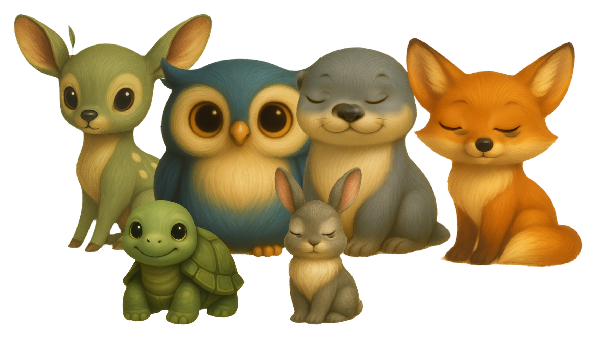
Not a bot buried in a menu. The companion you choose and bond with for everyday practice is the same warm presence you can talk to when things get hard.
Pick one of six gentle companions, each with its own temperament. Name it, and make it yours.
Work through real DBT skills with guided exercises like STOP, TIPP, and paced breathing — and log a one-minute diary card.
The same companion is one tap away in chat. And the Crisis Survival Kit — 988, 741741, your local lines — is always free and works offline.
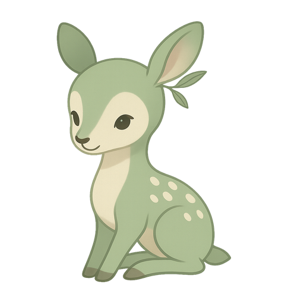
Six soft nature-spirits, each a different way of showing up. The same companion guides your practice and stays with you in the hard moments.
Warm and quiet. Slows the body down — feet on the floor, one slow breath.
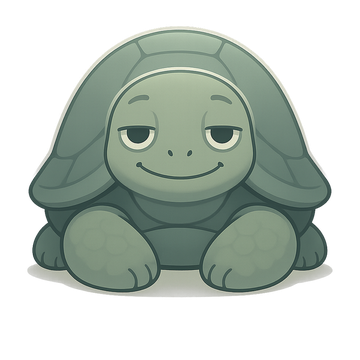
Unhurried and immovable. "We have time. Nothing has to be solved this second."
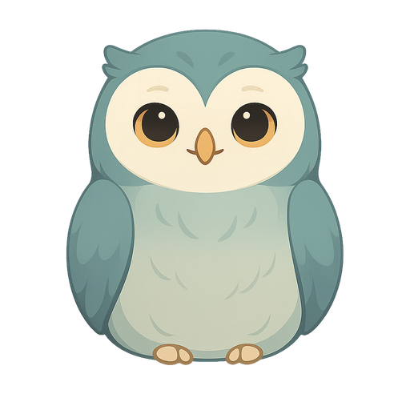
Calm and plainspoken. Helps you name what's happening and see it clearly.
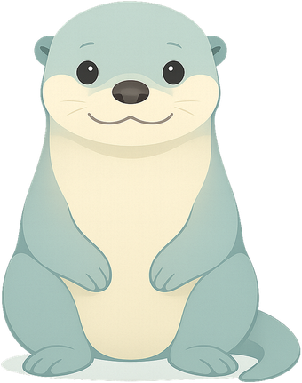
Upbeat and honest. "You showed up — that counts. What's the next small win?"
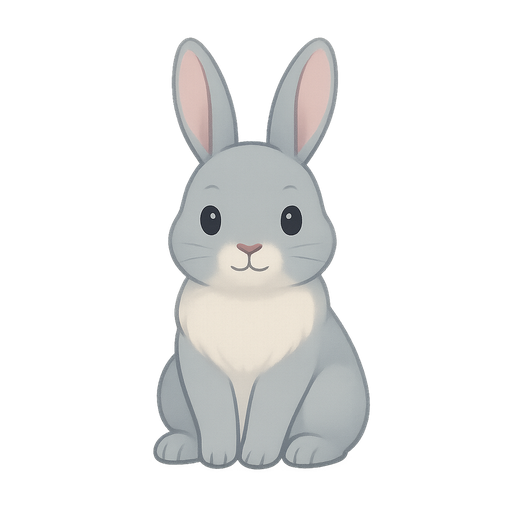
Soft and permission-giving. "You don't have to be okay right now."
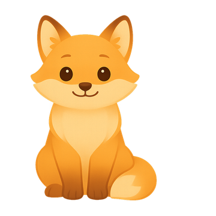
Warm and low-light, not peppy. "Let's find one warm thing to stand on."
Faithful to the DBT model, built warm by design — the opposite of clinical.
Six gentle companions, each with a distinct temperament — grounding, steady, clear, encouraging, tender, or hopeful. The companion is an AI guide, named and yours.
All four modules — Mindfulness, Distress Tolerance, Emotion Regulation, Interpersonal Effectiveness — in small, plainspoken steps you take at your own pace.
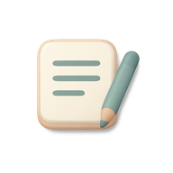
Track emotions, urges, and the skills you used in under a minute. Look back without judgment and notice your own patterns gently over time.
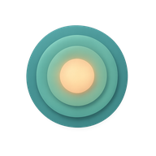
STOP, TIPP, and paced breathing — guided step by step, with a companion who can breathe alongside you when you want company.
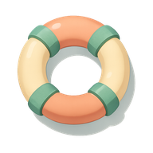
988, 741741, and your local lines — never behind a paywall, and it works offline. Some things should never be gated.
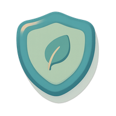
No sign-up, nothing to share. Your diary and practice stay on your device by default. No ads, no third-party trackers on your diary or chat.
Warm, plainspoken, and built for hard moments — not a clinical dashboard.
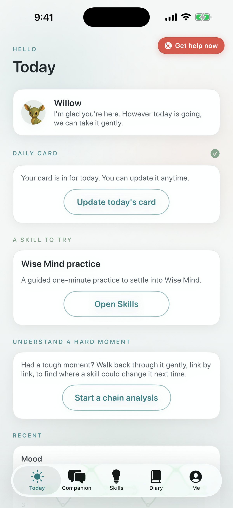
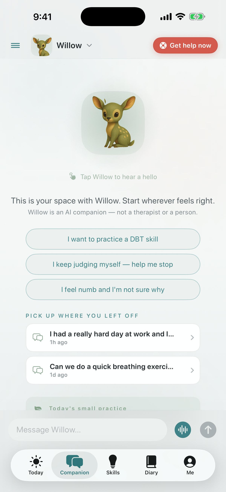
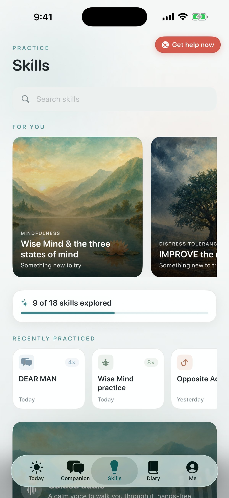
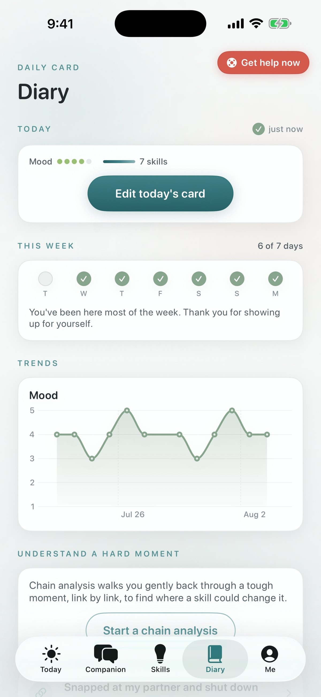
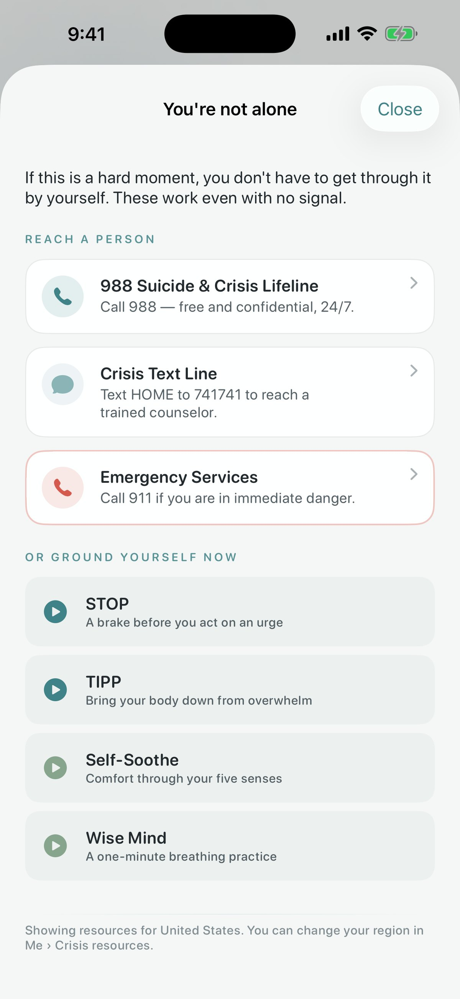
The Crisis Survival Kit is never behind Pro and works offline: 988 (call or text, US), 741741 (text HOME), and your local lines, resolved to your region. If you're in immediate danger, call your local emergency number.
The skills, the diary card, all six companions, and the crisis kit are free. Plus adds the extras — and crisis support is never paywalled.
No. Quietoak is a self-help tool based on the DBT (Dialectical Behavior Therapy) model. It is not therapy, not a diagnosis, and not a substitute for professional care. It's designed to work alongside therapy, or while you're learning the skills on your own.
No — your companion is an AI guide. It says so, it never claims to be a therapist or a human, and it points you toward people and professional help when that's what's needed. It's there to help you practice skills, not to be something you lean on instead of real support.
The Crisis Survival Kit is one tap from anywhere in the app, always free, never paywalled, and works offline — 988 (call or text, US), 741741 (text HOME), and your local lines. If you're in immediate danger, call your local emergency number. Quietoak is not an emergency service.
Your diary and practice are stored on your device by default. There's no account and no login. We don't run ads or third-party trackers against your diary or chat. To generate replies, your messages are sent to our backend and an AI provider — the full data flow is in our privacy policy.
The DBT skills library, the diary card, all six companions, and the crisis kit are free. Quietoak Plus ($9.99/month or $59.99/year) adds premium companion voice, deeper memory, advanced trend analytics, and weekly / clinician-ready export. Crisis features are never behind Plus.
Adults (18+) who want to practice DBT skills in a calm, private space — whether you're in therapy and using it as an adjunct, on a waitlist, or learning the skills on your own.
iOS first, with iPad on the same app. Android and Mac aren't committed yet.
Quietoak is coming to iOS. Leave your email and we'll let you know when it's ready — and crisis support will always be free.
Get early accessQuietoak teaches DBT skills and is not therapy, medical treatment, a diagnosis, or a crisis service. Your companion is an AI guide, not a human or a substitute for professional care. If you're in crisis, call or text 988 (US) or your local emergency number. 18+.